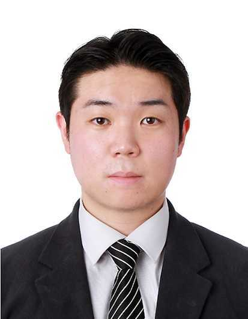
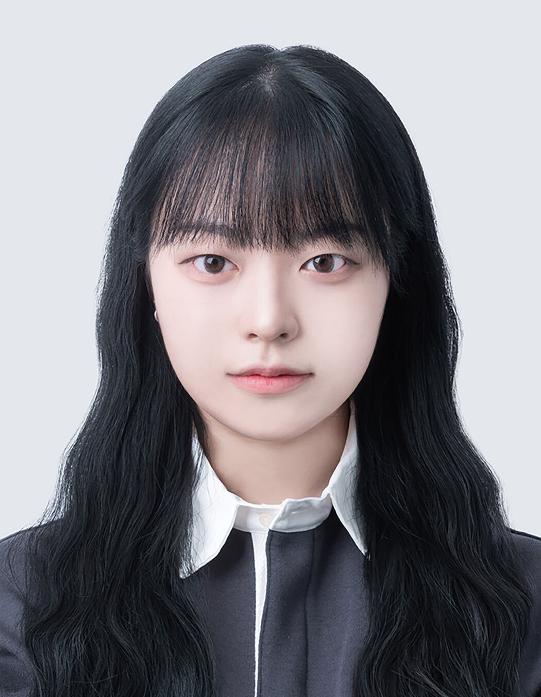
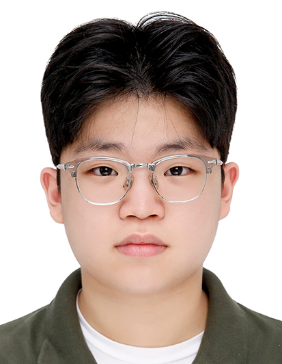
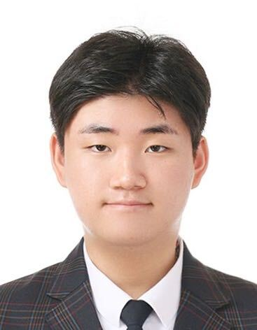
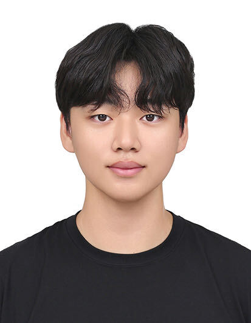
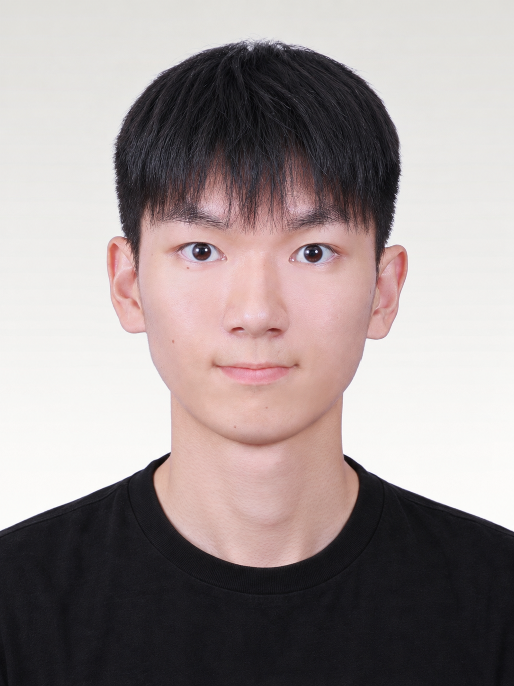
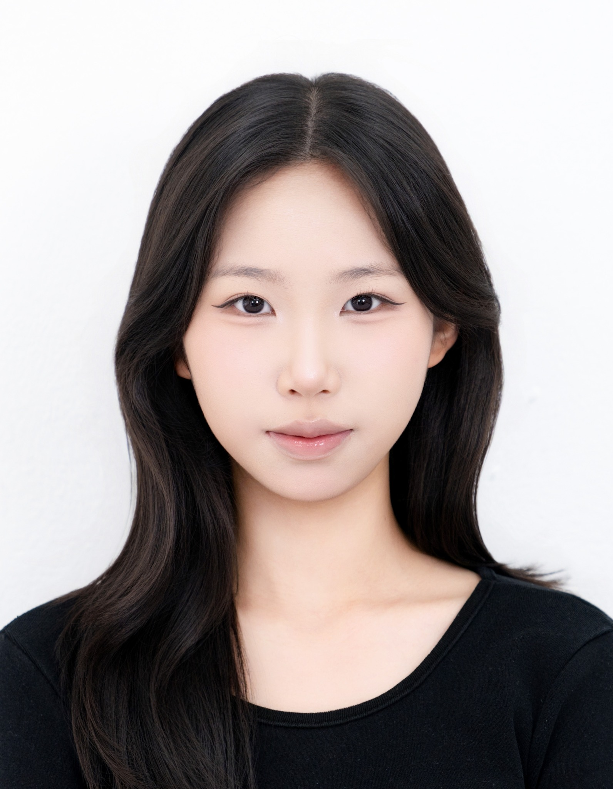
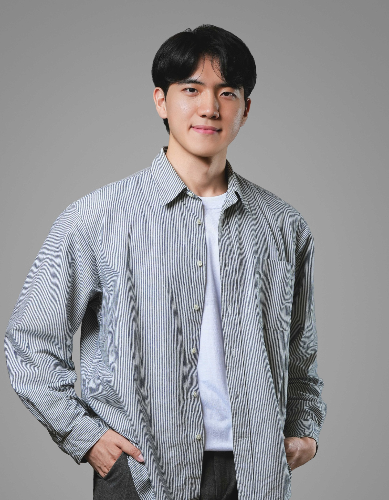
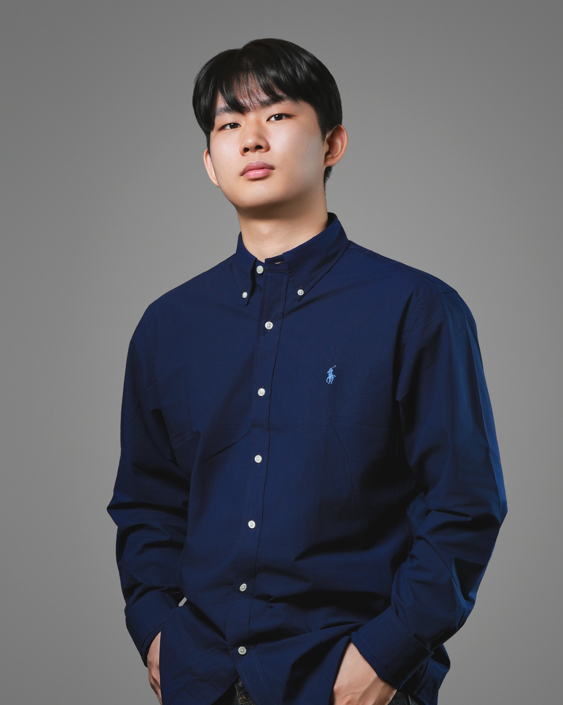
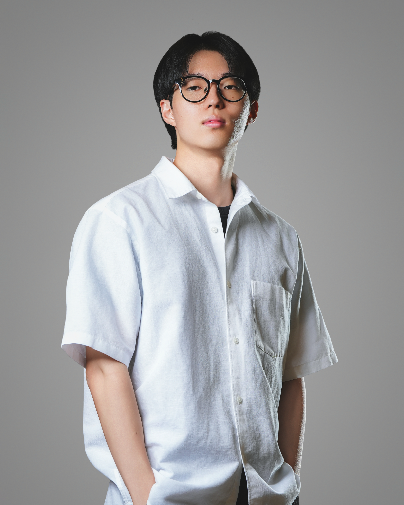

People
Ji-il Park, Ph.D.
박지일
Professor
Department of Mechanical Convergence Engineering
Kangwon National University
Research Interests
Extreme-environment Autonomous Driving
Adverse-weather Perception
MUM-T Control
Multi-UAV Systems
CoA & IPB Automation
Education
- 2005 Korea Military Academy, B.S. in Mechanical Engineering
- 2012 Hankuk University of Foreign Studies, M.A. in Diplomacy & Security
- 2013 KAIST, M.S. in Mechanical Engineering
- 2022 KAIST, Ph.D. in Mechanical Engineering
Professional Experience
- 2013–2015 Instructor, Korea Combat Training Center (KCTC), ROK Army Training & Doctrine Command
- 2016–2018 Assistant Professor, Department of Mechanical Systems Engineering, Korea Military Academy
- 2021 Visiting Researcher, Department of Electrical Engineering, Technical University of Denmark (DTU)
- 2022–2023 Unmanned & AI Officer, Office of the Vice Minister / Defense Reform Office, Ministry of National Defense
- 2024–2025 Ground AI Researcher, Defense AI Technology Research Institute, Agency for Defense Development (ADD)
- 2026 Chief Research Officer (CRO), Advisorlauren AI
Contact
Email: tinz64@kangwon.ac.kr
Tel: 033-250-6311
Current Members

Woo Gyuhyeon
Undergraduate Student
Path Planning & Control

Kim Yeongbi
Undergraduate Student
UAV Autonomous Flight & Control

Kim Seounghun
Undergraduate Student
UAV Guidance & Control

Kim Jeonghyun
Undergraduate Student
Extreme-Environment Military Vehicle Control

Song Gihyeok
Undergraduate Student
Extreme-Environment Autonomous Driving & Perception

Han Dongseok
Undergraduate Student
Object Tracking & UAV Control

Lee Yewon
Undergraduate Student
UAV Control & Autonomous Defense Systems
Alumni

Kim Jimin
Korea Aerospace University
RL-Based Robust UAV Control
Advisorlauren Co.

Kim Yunho
Korea Aerospace University
Multi-UAV Control & Mission Allocation
Advisorlauren Co.

Chung Jaemin
Korea Aerospace University
3D Point Cloud Reconstruction
Advisorlauren Co.